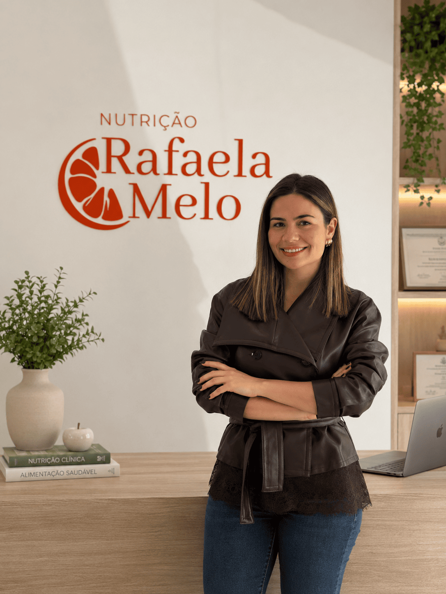

Adapte o plano à sua rotina,
não o contrário.
Esqueça as dietas malucas e o terrorismo nutricional. Um acompanhamento organizado, humano e totalmente adaptado a si, para alcançar os seus resultados com saúde.

Foco em
Emagrecimento de forma leve e saudável
Equilíbrio
Permita-se ter momentos pontuais. Eles também integram uma alimentação saudável.
Humanização
Um processo feito em equipa. Não está sozinho(a) nos momentos menos bons, nem nos de maior progresso.
Flexibilidade
Planos alimentares reais, adaptados ao seu dia a dia, gostos e necessidades específicas.
Muito Prazer, sou a
Dra. Rafaela Melo
Sou Nutricionista apaixonada por descomplicar a alimentação. Acredito que o caminho para uma vida mais saudável não deve ser feito de restrições extremas, mas sim de conhecimento, equilíbrio e boas escolhas.
O meu objetivo é ajudá-lo(a) a alcançar os seus resultados de forma leve, adaptando o plano à sua realidade e não o inverso. Nas minhas consultas, prezo por uma abordagem humana, empática e muito prática (sou fã de boas meal preps!).
- Cédula Profissional (ERS): E167591
- Atendimento focado no paciente
- Resultados com saúde e sem terrorismo nutricional
Formatos de Consulta
Escolha a modalidade que melhor se adapta à sua rotina. O acompanhamento e a dedicação são exatamente os mesmos.
Consulta Presencial
Atendimento no consultório em Cascais. Ideal para quem prefere o contacto direto e a avaliação física presencial com bioimpedância.
Consulta Online
Acompanhamento de excelência à distância de um clique. Poupe tempo em deslocações e seja acompanhado(a) de qualquer parte do mundo.
Classificação de 5.0 Estrelas
Mais de 70 avaliações no Google de pacientes reais e satisfeitos.
"Organizada, despachada e, sobretudo, humana. Uma excelente nutricionista que me tem ajudado no processo de me tornar mais saudável. Faz-me sentir sempre que é um trabalho de equipa e que não estou sozinha no processo... Muito obrigada, Rafaela! :)"
Inês Campos
"A Dra. Rafaela é uma profissional incrível! Em poucas consultas, já tenho alcançado resultados muito mais rápidos do que esperava e, acima de tudo, de uma forma muito leve. É sempre muito simpática, atenciosa e disposta a adaptar o plano..."
Laís Santos
"Torna-se fácil fazer uma crítica positiva quando os profissionais são de excelência. Este é um desses casos, a Dra.Rafaela além de um ser humano com imensa empatia..."
Alexandra Silva
Contactos & Localização
Morada (Consultório)
Rua Manuel Francisco n°75, Loja 1
2645-558, Alcabideche,
Cascais
Portugal
Horário de Funcionamento
Segunda a Sexta-feira: 09:00 – 19:30
Sábado e Domingo:
Encerrado